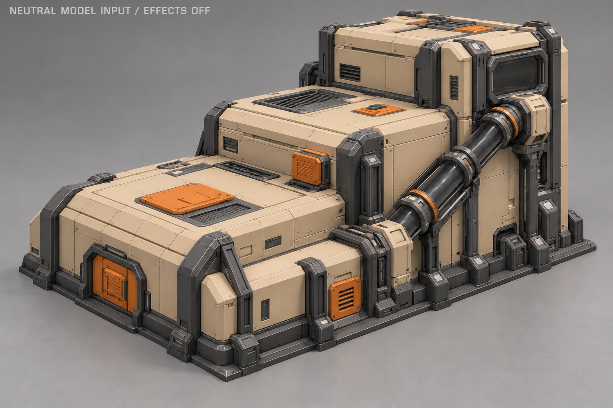
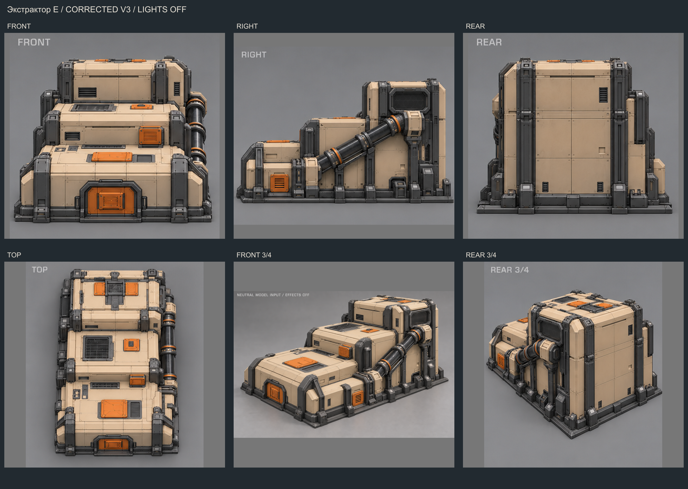
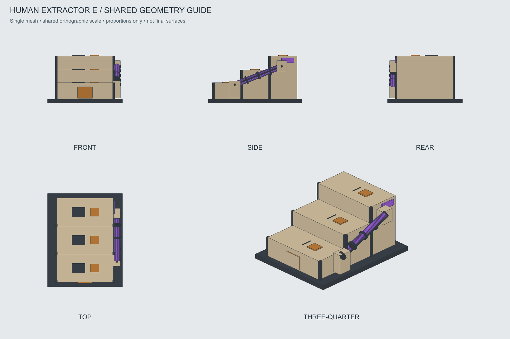

Экстрактор людей · E «Ступенчатый завод»
Выбран 28 октября 2026. Полностью накрывает месторождение. Одна наклонная труба справа ведёт плазму от переднего корпуса к верхнему заднему блоку.
Паспорт и схема будущей анимации · OBJ-каркас · История A–F
Основной вид

Исправленные детальные ракурсы V3

Проекции одного объёма

Для будущей анимации: волна яркости по трубе снизу спереди вверх назад. Анимация и детальная игровая модель ещё не созданы. Каркас фиксирует массы; точные оболочки берутся с основного вида.